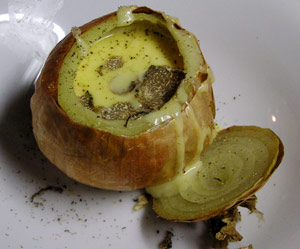

Fonduta in gebackener Zwiebel
5,5 von 6300g Fontina-Käse in kleine Würfel schneiden, 1 dl Milch angiessen, zugedeckt an einem kühlen Ort über Nacht durchziehen lassen.
Eine Schüssel aus Edelstahl mit abgerundetem Boden ins warme Wasserbad stellen (oder unser Simmertopf verwenen), etwas Butter hineingeben und zergehen lassen.
Käsewürfel mit der Milch dazugeben, bei niedriger Temperatur langsam schmelzen lassen und dabei ständig mit einem Schneebesen kräftig rühren.
Sobald der Käse geschmolzen ist und Fäden zieht, die Temperatur des Wasserbades erhöhen. Nacheinander 2-3 Eigelb hineingeben und mit einem Holzlöffel kräftig unterrühren. So lange rühren, bis der Käse eine schöne, sämige Konsistenz hat und keine Fäden mehr zieht
Käsecrème in die ausgehölten und bei 150 Grad eine Stunde lange im Ofen gebackenen Zwiebeln füllen. Mit Pfeffer und wenn möglich mit schwarzem Trüffel verfeinern.
